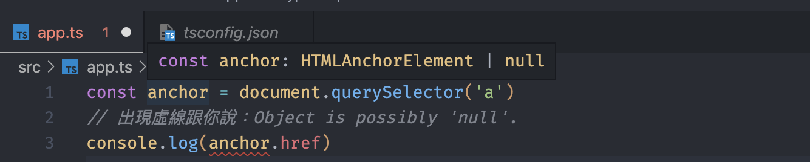

看來要精通它得花更多時間來練習才行。
存取 DOM 元素 當我們在操作 DOM 元素時，可能會用一個變數來儲存元素，像這樣：
1 2 const anchor = document .querySelector('a' )console .log(anchor.href)
這時候就會顯示錯誤說：「Object is possibly null」，這是因為 TS 預設判斷 type 長這樣：

因為在寫 TS 的時候他不會知道你選到的 DOM 元素是否真的存在 ，所以他會幫你加上一個 null，代表這有可能是 null。
解決的方法有蠻多的，參考以下幾個：
1 2 3 4 5 6 7 8 9 10 11 12 13 14 15 16 17 const anchor = document .querySelector('a' )console .log(anchor?.href)const anchor = document .querySelector('a' ) as HTMLAnchorElementconsole .log(anchor.href)const anchor = document .querySelector('a' )!console .log(anchor.href)const anchor = document .querySelector('a' )if (anchor) { console .log(anchor.href) }
透過 selector 來選取 DOM 元素 如果元素是透過 selector 來選到的話，TS 只會把他指派為 Element | null 這個 type，所以你可以自行指定：
1 2 3 4 5 6 7 8 9 10 11 const form = document .querySelector('.new-item-form' ) as HTMLFormElementconst type = document .querySelector('#type' ) as HTMLSelectElementconst toFrom = document .querySelector('#tofrom' ) as HTMLInputElementconst details = document .querySelector('#details' ) as HTMLInputElementconst amount = document .querySelector('#amount' ) as HTMLInputElementform.addEventListener('submit' , function (e: Event ) e.preventDefault() console .log(type .value, toFrom.value, details.value, amount.valueAsNumber) })
Class 本身可以當成一個 type 1 2 3 4 5 6 7 8 9 10 11 12 13 14 15 16 17 18 19 20 21 22 23 class Invoice client : string details : string amount : number constructor (c: string , d: string , a: number ) this .client = c this .details = d this .amount = a } format ( return `${this .client} has ${this .details} for ${this .amount} ` } } const invoiceOne = new Invoice('peanu' , 'bicycle' , 300 )const invoiceTwo = new Invoice('ppb' , 'phone' , 100 )const invoices: Invoice[] = []invoices.push(invoiceOne, invoiceTwo)
Class 的 private、readOnly、public 這個寫法在 JS 中其實是沒作用的，但到了 TS 就不一樣了：
1 2 3 4 5 6 7 8 9 10 11 12 13 14 15 16 17 18 19 20 21 22 23 24 25 26 class Invoice private client: string readonly details: string public amount: number constructor (client: string , details: string , amount: number ) this .client = client this .details = details this .amount = amount } format ( return `${this .client} has ${this .details} for ${this .amount} ` } } const invoiceOne = new Invoice('peanu' , 'bicycle' , 300 )const invoiceTwo = new Invoice('ppb' , 'phone' , 100 )const invoices: Invoice[] = []invoices.push(invoiceOne, invoiceTwo) invoices.forEach((inv ) => { console .log(inv.details, inv.amount, inv.format()) })
在沒有指定任何關鍵字時，class 中的每個屬性預設都是 public，代表不論是 instance 還是 class 本身都可以去 Read & Write。
private 是只有 class 可以 Read & Write，readOnly 則是 instance 和 class 都只能 Read。
泛型（Generics） 泛型對我來說是一種「沒有明確指定，但又不希望是 any 的 type」，先來看個範例。
假設有一個 function 是專門用來加上 uid 屬性，然後預期會接收「物件」的 type：
1 2 3 4 const addUID = (obj: object ) => { const uid = Math .floor(Math .random() * 100 ) return { ...obj, uid } }
看起來沒什麼問題，可是當你寫成這樣時就會得到一個錯誤：
1 2 3 4 5 6 7 8 9 10 11 12 13 const addUID = (obj: object ) => { const uid = Math .floor(Math .random() * 100 ) return { ...obj, uid } } const me = { name : 'peanu' , age : 24 } const newMe = addUID(me)console .log(newMe.name)
為什麼會這樣？這裡要先知道 TS 有一個「自動判斷」的機制，就是像我們宣告 let a = '123' 時他會自動判斷 a: string 的功能。
而剛剛的範例中我們只有指定 obj: object，並且最後把 {...obj, uid} 回傳出去。
問題就出在這邊，TS 怎麼會知道 object 長怎樣？他唯一能知道的就是一定會有 uid 這個屬性，因為他是寫死的。
所以這時候就可以用「泛型」的方式來改寫：
1 2 3 4 5 6 7 8 9 10 11 12 13 14 15 16 const addUID = <T>(obj: T ) => { const uid = Math .floor(Math .random() * 100 ) return { ...obj, uid } } const me = { name : 'peanu' , age : 24 } const newMe = addUID(me)console .log(newMe.name)
這邊我還是不太熟，不過我是這樣記的：
<T> 我要用泛型來指定 type(obj: T) 意思是 obj 的 type 會根據「我」或「自動判斷」指定的 <T> 來決定
可是我只希望她就是 object 該怎麼辦？你可能會以為要這樣寫：
1 2 3 4 5 6 7 8 9 10 11 12 13 const addUID = <T>(obj: T ) => { const uid = Math .floor(Math .random() * 100 ) return { ...obj, uid } } const me = { name : 'peanu' , age : 24 } const newMe = addUID<object >(me)console .log(newMe.name)
這樣是不對的，這樣就變成最一開始的意思了。
如果你真的希望 <T> 要侷限在某個範圍中，可以用 extends 的方式來指定：
1 2 3 4 5 6 7 8 9 10 11 12 const addUID = <T extends object > (obj: T) => { const uid = Math.floor(Math.random() * 100) return { ...obj, uid } } const me = { name: 'peanu', age: 24 } const newMe = addUID(me) console.log(newMe.name)
當然，你也可以用超嚴格的方式來指定：
1 2 3 4 5 6 7 8 9 10 11 12 13 14 15 16 17 18 interface Person { name : string age : number } const addUID = <T extends Person > (obj: T) => { const uid = Math.floor(Math.random() * 100) return { ...obj, uid } } const me = { name: 'peanu', age: 24 } const newMe = addUID(me) console.log(newMe.name)
這樣子也不是不行，只是就失去了泛型的意義了，因為這跟 obj: Person 的意思沒兩樣，所以通常不會用這麼嚴格的方式來指定 type。
最後在附上一個示範，我想提醒的是泛型並不是只能用在 function 上 ，他可以應用在各種地方，像是 interface、type 和 class 等等。
1 2 3 4 5 6 7 8 9 10 11 12 13 14 15 16 17 18 19 20 21 22 23 24 25 26 27 28 29 30 interface Live<T> { title : string address : string url : string date : T } const live1: Live<Date > = { title : "Peanu's birthday" , address : 'internet' , url : 'https://birthday.com' , date : new Date () } const live2: Live<string > = { title : "Peanu's birthday" , address : 'internet' , url : 'https://birthday.com' , date : '2022-07-12' } const live3: Live<number > = { title : "Peanu's birthday" , address : 'internet' , url : 'https://birthday.com' , date : 20220712 }
補充 順道一提，如果你是在 React 的 Component 中使用泛型的話，要盡量避免用 arrow function 來定義，因為會跟 JSX 的 <> 搞混。
Do this：
1 2 3 function Table <Titem >(props: TableProps<Titem> ) return null }
Not this：
1 2 3 4 const Table = <Titem>(props: TableProps<Titem> ) => { return null }
Enum 簡單來說就是「代號」
1 2 3 4 5 6 7 8 9 10 11 12 13 14 15 16 17 18 19 20 21 22 23 24 25 26 27 28 29 30 31 32 enum Status { SUCCESS = 1 , ERROR = -1 , FAIL = 0 } interface Live { title : string streammer : string time : number status : Status } const live1: Live = { title : 'PeaNu Birthday' , streammer : 'PeaNu' , time : Date .now(), status : Status.SUCCESS } const live2: Live = { title : 'PeaNu Birthday' , streammer : 'PeaNu' , time : Date .now(), status : Status.FAIL } const live3: Live = { title : 'PeaNu Birthday' , streammer : 'PeaNu' , time : Date .now(), status : Status.ERROR }
這樣寫的目的是當有一堆代號時比較不會混亂，不過要注意編譯完的結果一樣會是代號 ，這只是讓開發的時候比較好讀而已。
把 Object 從 Array 抽出來的方法 之前突然有這個需求，所以記錄一下，詳細可以參考這篇
1 2 3 4 5 export interface Cache { events : Event[] users : User[] } type CacheType = Event[] | User[]
1 type Unpacked<T> = T extends (infer U)[] ? U : T
1 type InnerCacheType = Unpacked<CacheType>
想知道原理的話可以再參考這篇